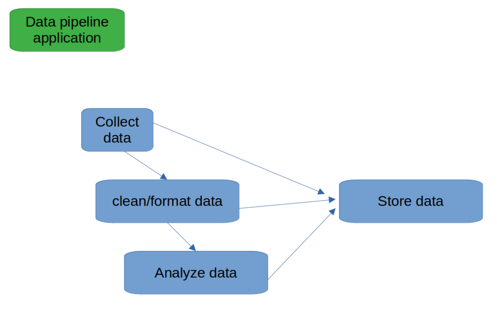
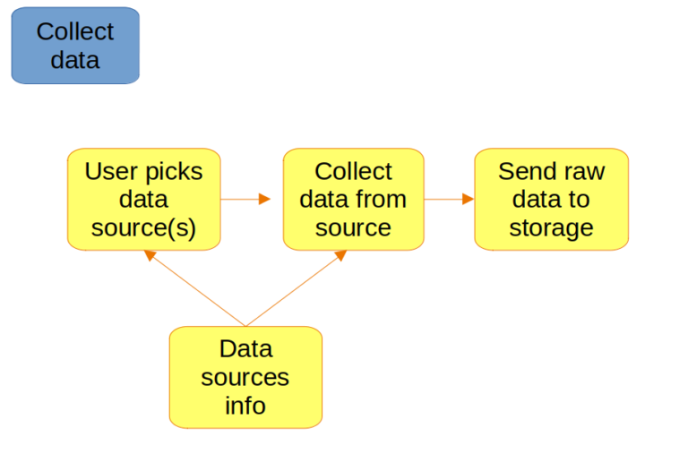
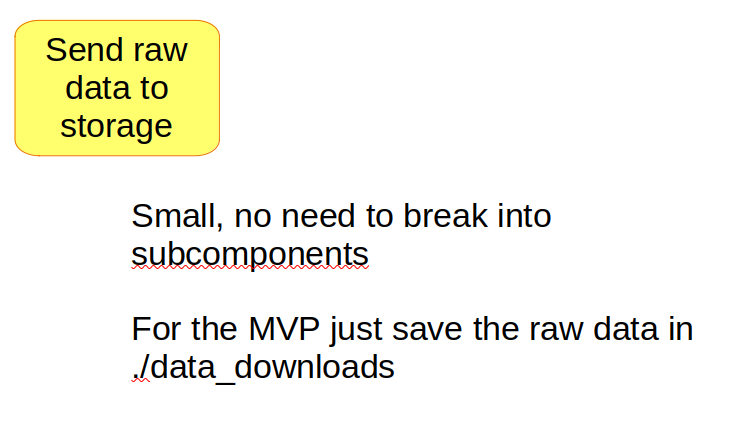

Do “outline speedrunning”: Recursively outline an MVP, speedrun filling it in, and only then go back and perfect.
This is a ~10x speed up over the ‘loading-bar’ style (more on that below)
Don’t just read this article and move on. Go out and do this for the very next thing you make so you can get in the habit of doing it.
(btw, here, speedrunning just means doing something as fast as possible)
Outline speedrunning algorithm:
Make an outline of the project
For each item in the outline, make an outline. Do this recursively until the items are small
Fill in each item as fast as possible
You’ll get more momentum by speedrunning it, which feels great, and will make you even more productive
DO NOT PERFECT AS YOU GO. This is a huge and common mistake.
Finally, once completely done, go back and perfect
Color the title text, figure out if buttons should have 5% or 6% border radius, etc
Since you’re done, you’ll be less stressed, have a much clearer mind, and design your project better
And hey, you’ll enjoy the whole process more, and end up making more things over the long run, causing you to learn/grow more
CRITICAL requirements for outline speedrunning
Outline rcursively
speedrun
DO NOT PERFECT ANYTHING UNTIL DONE
Outlining is a fundamental of building
Outline speedrunning may seem basic. That’s because it is.
Planningis a fundamental of doing, and outlining is a fundamental of planning.
Much of becoming really efficient is about getting extremely cracked at the fundamentals (many of which you probably mistakenly dismiss).
This is recursive btw, because fundamentals typically have fundamentals.
its conceptual building building blocks all the way down
I knew about outlining since I was little but didn’t do it until I was 20. After I started it took time to get cracked at outlining and refine it into outline speedrunning.
There is immense amounts of wisdom/utility/alpha in reevaluating any fundamentals that your mind dismisses as unimportant.
Much improvement in any performance-based field comes from fixing these misevaluations.
You may already do outline speedrunning. If you’re not, it’s a 10x speedup over the classic ‘loading bar’ style.
Generally, the best speedups come from improving your algorithms, rather than ramming your head into the task harder.
Write large docs faster
My attempt at speedrunning each method for a minute or so. left: loading-bar. right: outline speedrunning.
Loading-bar writing:
Common mistake: ‘loading bar writing’ – starting at the beginning of the document and writing sentence by sentence, like a loading bar going through the document.
I wrote like this until I was ~20. It made me hate writing.
Now writing is easy and quick. My writing (and at the time, grades) improved substantially because I could allocate more time towards quality with a clearer, less stressed mind.
Outline speedrunning writing
Get topic to write about
(optional) brainstorm the general plot of the paper
quickly write the outline (sections)
repeat 2 for each section recursively, until the lowest-level sections are small enough to not need outlines
speedrun (without caring about quality AT ALL) filling in each outline (starting at the lowest level) until the whole doc is filled out
Enjoy the feeling of being 90% done while you go back and perfect the doc, color the title text, add pictures, etc (the fun part!)
Do this to effortlessly improve both speed and quality of writing.
Program faster
Going from loading-bar to outline speedrunning significantly speeds up programming
Outline speedrunning for programming:
Figure out what the main purpose/function of your program is.
Break the program into parts grouped by functionality.
repeat steps 1-2 for each part, unless it is very small.
implement the components starting with the lowest-level
Example (simplified version of a data pipeline I built):
Idea: Data pipeline application
Main purpose: collect tons of data and analyze/store it
Breaking it down into components:
data collecting component
data cleaning/formatting component
data analysis component
data storage component

repeat step 2 for each part. Breaking down the data collecting component into subcomponents:
Component: list of data collection methods (web scraping, simulation data, tool measurement data, etc)
Component to get user input for choice of data collection method
Component to execute chosen data collection methods
Component to send collected data to storage

repeat step 2 for each other component and subcomponent, unless they are smal

This can be done on a whiteboard, drawn on paper, in your head (can be subpar) or outlined like an essay. The most efficient medium depends on your project. You’ll get a feel for what works best by just practicing this